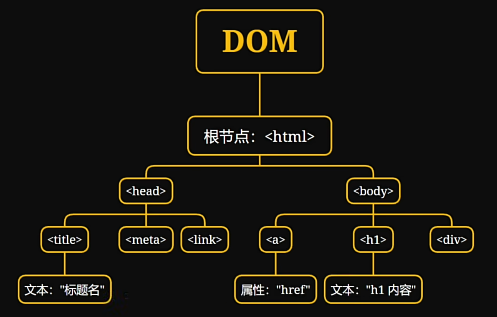
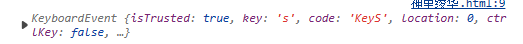
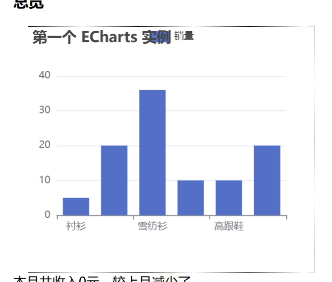

script可以在head写，也可以body写。
引用外部js，与CSS的导入不太一样
console.log()
会再控制台打印对应内容并换行。
可以只打log然后代码补全。
alert()
浏览器弹窗。
var 是一般的变量，variable
let 更安全。
注意，var可以多次声明，重名的变量会被视作同一变量，而let不行。
const 是常量。
注意，未初始化的变量，变量值为undifined，如果后面直接+=一个字符串，会把undefined变成文字的undefined加上去；如果是+=数字，会把undefined转换为NaN再相加，结果是NaN.因此，一定要在声明时给个初始值保护。
%是取余，和python一样。
由于var的作用域是整个函数，这个特性可以利用。比如，如果
在现代变成
提取文本中索引为i的也是text[i]
表示一段切片，例如Python中的item[5:7]，得用item.substring(start,end)或者item.slice(start,end)
两者的区别是，slice可以接受负数来表示倒数第几。
和Python里一样，都是左闭右开的区间。
文本.split
使用反引号包围的文本，就是模板字符串。
它可以直接使用${}嵌入任意有效的JavaScript表达式，类似于python的格式化字符串：
let name = "alice"
console(`Hello, ${name}`) // 输出 Hello, alice
同时，它支持多行，类似于python的 """ """
const text = `This is a
multi-line string.`;
indexOf方法，用来查找某个元素
myArray.indexOf(查找的内容)
include方法，用来检查是否包含某个元素，类似python里的in
lastIndexOf是查找最后一个。
创建数组，在python中是list()，在js中是 var arr = new Array()
或者[]
删除数组的某一元素，使用splice()
array.splice(start,deleteCount,item1,item2,...)
删除某一段。
从start开始，删除deleteCount个元素，之后可以把.
注意，item1,item2....可选，但是start和deleteCount必须指定，如果不指定deleteCount，则默认为0，不删除。
indexOf方法，用来查找某个元素
myArray.indexOf(查找的内容)
include方法，用来检查是否包含某个元素，类似python里的in
var dic = {c:5,a:2}
或者{}
多数语言中，对象和字典通常是两个不同的概念。对象通常是类的实例；而字典（或叫映射、哈希表）是动态的数据结构，可以动态存储键值对。
但是，在js中，字典和对象是同一个概念。对象既能像对象一样动态地存储键值对，也能像对象那样。
而且，在js中，声明时字典的键这个字符串，可以不用带双引号，例如
var option = {
title: {
text: '第一个 ECharts 实例'
},
tooltip: {},
legend: {
data:['销量']
},
xAxis: {
data: ["衬衫","羊毛衫","雪纺衫","裤子","高跟鞋","袜子"]
},
yAxis: {}
}
里面的键title可以加双引号，也可以像这样不加。
而且，由于它也是对象，所以，option["title"] 也可以用option.title来获取。
语法：
if (表达式1){
}else if(表达式2) {
}else{
}
注意表达式要用括号括起来。
注意判断是和C、python一样，==才表示判断。
注意，空数组也是true。
for (初始化循环变量;循环条件表达式;迭代器){
}
可以用++运算符表示+1。
对于可迭代对象，例如数组、Map、Set、字符串，可以使用for ... of
for (let 迭代用的循环变量 of 被迭代的对象){
}
来在每次循环中获得一个被迭代对象的内容。
而对于不可迭代元素，如字典，可以使用for... in（一般不要用，因为这样遍历会遍历属性，可能会导致bug。如果只是实现python 的for item in ，就用for ..of 即可）
for (let item in 被迭代的对象){
}
很多时候我们只是想遍历数组里的每个元素
for item in array:
print(item)
for i in range(len(array)):
item = array[i]
print(f"第{i}个是{item}")
如果使用js的for来写，就是
for (let item of array){
print(item)
}
for (let i = 0; i < array.length; i++){
let item = array[i];
print(`第${i}个是${item}`);
}
forEach提供了一种简便的方法用于遍历数组。
array.forEach(function(item, index, array){
// 处理逻辑
})
而我们可以使用forEach来替代，更加简单。
array.forEach(function(item){
print(item)
})
array.forEach(function(item, index){
print(`第${i}个是${item}`);
})
通过这种传入一个类似回调函数的处理函数来遍历。
不过，forEach并不会返回新数组，也不能使用break等来提前终止循环，而是只能用some()等。
array.map(function(value,index,array){
})
遍历数组array里面的每一个对象，并能获取到在数组中的位置、原数组，相当于
for (let index = 0;index < array.lenght;index++){
let value = array[index]
}
注意，map的不同之处在于，它里面的这个函数提供的array，是另外一个新变量，即不会修改原array
这里就涉及到了var和let的区别。
var的作用域是整个函数，而let声明的作用域是块级作用域，例如一个{}内部，或者一个循环体内部。这也是为什么上面for这样写，不会在循环过程中因重定义item而报错了。
var声明的变量，声明过程会被提升到当前函数的顶部，但是声明过程的赋值还会在原来的位置。因此，在var a之前使用a不会报错，会返回undefined。而let不会被提升，因此在声明前访问会报错ReferenceError.
var可以重复声明一个变量，不会报错，只会覆盖前面的值；而let重复声明会SyntaxError。
var和let都可以用来声明全局变量，只要写在函数外面就行了。但是var声明的全局变量会成为window的属性，可能会污染属性。
总的来说，建议全部使用let
在函数内定义全局变量，可以直接
window.需要定义的变量 = 变量内容
但是还是建议不要在函数里操作全局变量，全部采用函数思想，函数本身无权访问全局变量，只有主函数可以接触全局变量。全局变量的值通过参数给到函数，处理完的值通过返回值给到主函数，由主函数执行对全局变量的修改。
这样做可以提高代码的可维护性和函数的独立性。
当然有些时候还是可以用一用的，例如跨函数共享数据等。
这是一种在函数外读取到函数内的局部变量的方法。
闭包可以记住它所在的上下文的变量，在未来它们已经发生改变甚至作用域已经结束的情况下仍然可以使用这份记忆。
闭包函数、闭包的意思都是指，能够访问与它在同一“目录”（这里指的是位置，例如都在同一个函数内部）的变量，并且在这个“目录”以外仍然能被调用并访问这些“目录”以内的变量的函数。
如果在函数中声明了子函数并引用了局部变量 等情况：
function fun(){
let a = 0
function inner_fun(){
alert(a)
}
a +=1;
return inner_fun;
}
myfun = fun() // 获取fun的返回值inner_fun函数，即从fun提取到了inner_fun
myfun() // 此时就是在fun之外运行inner_fun,依然能正常运行并读取到a的最终值1。
像这样，在fun外部依然可以调用innerfun，而innerfun引用了a，所以就变成了可以在fun之外访问fun的局部变量a。
其中，fun是闭包生成器。作为返回值的inner_fun是一个闭包函数，
这样闭包来处理的变量a，是对变量a的引用，这意味着 innerfun里面的a并不是固定为innerfun被声明时的0，而是实时的值。这也是为什么运行myfun()得到的是a的最终值（在原本的作用域fun）即1
另外一个例子：
function main(){
let count = 0;
function handleClick() {
count++;
console.log(count);
}
document.getElementById('myButton').addEventListener('click', handleClick);
}
main()
这会导致，在main()之外，仍然有对handleClick()的引用，而handleClick会引用count，因此在main()结束之后，内存管理不会因为作用域结束而清除掉它。（即延长变量count的生命周期）
在main()结束之后，handleClick保持对count的引用，会获得它
while (条件表达式) {
}
function 函数名(参数1，参数2......) {
}
允许设置函数参数默认值，例如设置参数1=”“
对于只用一次的函数，可以用匿名函数。
例如这样把点击事件绑定到一个匿名函数
button_element.onclick = function() {
}
箭头函数=>可以简化匿名函数的写法。
function(arg1,arg2){
//函数的内容
}
可以写成
(arg1,arg2)=>{
//函数的内容
}
如果没有参数就()就好。
然后，如果箭头函数的代码只有一行，可以省略{}写到一行，它会自动返回该行的值，也就是说我们可以省去return不用写。比如
(arg1, arg2) => arg1 + arg2
就等同于
(arg1, arg2) => {
return arg1 + arg2
}
==注意==
this，它会捕获其所在上下文的 this 值。this 指向的是箭头函数被创建时的外层上下文的 this，而不是触发事件的元素。this 时可能会出现问题，因为它不会指向触发事件的元素。在JavaScript中，可以把函数作为参数传递，例如setTimeout,可以设置
function print() {
console.log("hello")
}
setTimeout(print, 3000);
需要注意，把函数作为参数传递，不用写括号，也不能写括号。因为如果写了括号，就会立即执行原本想要传递的函数，并且把函数返回值作为参数传递。
如果需要传递参数，可以这样：
function print(text) {
console.log(text)
}
setTimeout(function(){
print("hello")
}, 3000);
通过匿名函数来包装。
可以把函数作为参数
function plus(a,b){
return a + b;
}
function print1p1(i,j,k){
console.log(i,"+",j,"=",k(i,j))
}
function run(){
print-1p1(1,1,plus)
}
run()
隐式传递一般都是给某个玩意儿传入一个函数的情况。
比如说设置事件处理回调函数
target.clicked = (event) => {
// 函数内容
}
document.addEventListener("keydown", (event) => {
// 函数内容
})
forEach、map这些数组方法
arr.forEach((item, index, array)=>{
})
传入之后，它就会自动调用这个函数，并把它产生的一些数据传入进去。
所以，这个要传进去的函数，只要根据这个要传入函数的玩意儿的规定（比如说forEach顺序是item，index，array），去定义形参即可。
如果我们用不到这个参数，也可以直接不定义这个形参，因为js允许传入的参数超过形参数量。
比如说
target.clicked = () => {
// 函数内容。 里面用不到event，就可以不写
}
onclick 点击
onMouseOver 鼠标移入元素上空。常用于显示提示信息或改变样式。
onMouseOut 鼠标移出。常用于在鼠标移出时取消onMouseOver产生的变化。
onChange 文本内容改变（得是文本改变并且失去焦点才触发）
onSelect 用户选中元素中的文本（例如阅读软件中选择了文本就显示复制、搜索、划线标注的工具栏）
onFocus 当元素获得焦点。注意当已经获得焦点时，再次点击不会重复触发。
onBlur 当元素失去焦点时。
可以绑定到某个函数上。
<button onclick="fun()">按钮</button>
==函数没有参数的时候，也不要忘记在事件绑定的函数名后面加上()！==
事件侦听器
事件处理函数通常可以接受一个参数，用来获取与事件相关的信息。
例如
element.addEventListener('click', function(event) {
console.log('Event type:', event.type);
console.log('Target element:', event.target);
console.log('Mouse position:', event.clientX, event.clientY);
console.log('Ctrl key pressed:', event.ctrlKey);
以下是一些常见的event对象的属性和方法：
event.type：事件类型（如"click"、"keydown"等）。event.target：触发事件的元素。==可以用来代替this，避免定义域问题==event.currentTarget：事件处理程序绑定到的元素。event.preventDefault()：取消事件的默认行为。event.stopPropagation()：阻止事件冒泡到父元素。event.clientX：鼠标事件中鼠标指针的水平坐标。event.clientY：鼠标事件中鼠标指针的垂直坐标。event.key：键盘事件中按下的键。event.keyCode：键盘事件中按下的键的代码。event.which：鼠标或键盘事件中按下的键或按钮的代码。event.altKey、event.ctrlKey、event.shiftKey：表示Alt、Ctrl或Shift键是否被按下。例如onload、onclick都是事件处理函数
MyButton = document.getElement .....(省略)
MyButton.onclick = function(event){
//（做一些事来响应点击）
}
这里面的event,
第二行这个绑定事件的过程，其本质是这样一个过程：
为了方便，我们把这个事件处理函数
function(event){
//（做一些事来响应点击）
}
称为函数1。
那么，当绑定函数1到onclick上面，浏览器会“记住”这个函数，把它和“MyButton”的点击联系在一起。
当按钮被点击时，浏览器会创建一个事件对象eventObj，里面包含了这次事件的详细信息（如事件类型为点击事件、点击位置、触发这个事件的元素即target等）。
然后可以看作是浏览器执行了
函数1(eventObj)
或者叫
function(event) { ... }(eventObj)
即调用了函数1并把事件对象传递给它。由于我们实际上并没有写函数1(eventObj)这样的代码来手动把eventObj传给函数 1，是由浏览器自动执行的，所以这一过程被称作隐式传递。
此时，像我们刚刚这样声明的函数1
function(event){
//（做一些事来响应点击）
}
就会接收到eventObj，并传递给形参event，即让形参event指向eventObj
而如果我们声明时不声明形参event
function(){
//（做一些事来响应点击）
}
没有形参来接受传给函数1的eventObj，eventObj被传递但未被捕获。这时自然也无法在函数1里用event。
（注意，JavaScript允许传入参数和函数定义的形参数量不同，但是python就不可以这样 了。）
let reader = new FileReader();
reader.onload = function(){
}
我们通过btn.onclick和btn.addEventListener都可以设置按钮btn的点击处理函数。两种绑定是完全等效的。
但是，如何在函数里获得这个btn，比如说点击就会让按钮变色？
这似乎是一个最直观的方式。不管是两种设置处理函数方式的哪种，都可以正常使用。但实际上它并不稳定
const btn = document.querySelector('#myBtn');
btn.addEventListener('click', function() {
console.log(btn); // 正常输出 btn 元素
});
像这样直接把处理函数外的btn写到里面去，会形成闭包，让btn不会被销毁，让事件触发的时候依然能访问到btn。
但是这很有可能会遇到经典的闭包事后变化的问题，在循环或异步环境下使用闭包，可能会导致获取到之后的值
const buttons = document.querySelectorAll('button');
for (var i = 0; i < buttons.length; i++) {
buttons[i].addEventListener('click', function() {
console.log(buttons[i]); // ❌ 这里 i 已经变成了最后的值
});
}
因为i是循环变量，在循环中会不断变化，直到最后变成结束时的状态buttons.length - 1，闭包只是让他在此刻保持存在不被销毁，但是它的值将会一直是最后一个值，而不是各个按钮绑定时的0、1、2........
在绑定函数时，this可以获取到绑定的元素。但是这个方法也
不太稳定。
传入的是普通的匿名函数还是箭头函数，会影响this的效果。
btn.onclick = function() {
console.log(this); // this 指向 btn
}
事件处理函数写functin的形式是没问题的，this会指向事件所绑定的元素。
btn.addEventListener('click', (event) => {
console.log(this); // this 不是 btn
});
但是如果事件处理函数是用箭头函数的形式写的，就会出问题。因为箭头函数虽然也会创建自己的作用域，但是并不会创建自己的this等，而是继承自它外部的定义域。
事件处理函数被触发时，监听器会隐式传入一个event作为第一个参数。
event.target是触发事件的元素（精确到哪个元素，可能是btn的子元素）
event.currentTarget则是事件处理函数绑定的元素。
所以我们使用event.currentTarget就能很好地满足要求。
把HTML文档作为对象操作，动态地改变网页。

一个网页的结构是这样的，元素节点逐级往下，到了元素的一级，还有元素的各属性（属性节点，如class,id）和文本节点（多数双标签都有，例如a,h1,tittle）。
选择某个元素，可以通过id , class ， name , TagName (元素标签名称，div，img等) , TagNameNS来识别。
document.getElementById返回的是一个对象，因为id通常是唯一的所以只有 是element，获取到的是一个对象
document.getElementsByClass等这几个返回的是一个数组，因为class, name，tagName 可能不唯一，所以函数名也都是elements。会返回一个数组，要操作某一各对象要给一个索引值。
写法和python一样。[0]
甚至，如果想获取div#sc里的所有div，还可以
let sc = document.getElementById("sc");
let result = sc.getElementsByTagName("div")
等等。document能用的，它也能用。
也可以使用querySelectorAll(选择器)
里面的选择器就是和css选择器一样写法，"div" "p"这样表示元素，#abc 为id，.page表示选择指定类的
如果是多个选择器，那就用逗号隔开。
contentDiv.querySelectorAll('h1, h2, h3')
元素的内容，即双标签中间夹着的内容，会原原本本地给出来，包含HTML标记等。
例如
<button onfocus="pri()" id="targ">提交</button>
返回 "提交“
<div id="divid">
<input type="text" onselect="test()" class="testclass" id="tget">
<button onfocus="pri()" id="targ">提交</button>
<p id="target" style="background-color: blue;">sfsdfsf</p>
</div>
返回：
<input type="text" onselect="test()" class="testclass" id="tget">
<button onfocus="pri()" id="targ">提交</button>
<p id="target" style="background-color: blue;">sfsdfsf</p>
如果是单标记，例如img，这会返回空字符串
let element = document.getElementById("target")
element.innerHTML = "<a href='#'>这个a元素是将会被替换成的内容</a>"
通过对对象的.innerHTML进行赋值，修改元素的内容。
元素的内容的文本，就是双标签夹着的里面的所有双标签夹着的文本。
如果里面的是纯文本，没有HTML标签，则返回全部文本。
例如
<div id="divid">
<input type="text" onselect="test()" class="testclass" id="tget">
<button onfocus="pri()" id="targ">提交</button>
<p id="target" style="background-color: blue;">sfsdfsf</p>
</div>
返回：
神里绫华.html:33 提交
sfsdfsf
let myDiv = document.creatElement("div")
myDiv.onclick = .....
一个元素的class为它的classList属性。
一个元素可以同时是好几个类，在填写时用空格隔开。
<div class="class1 class2 class3" id="div1">...</div>
classList属性可以使用toggle()方法来切换类，即如果原本classList包含参数中的类，则从classList中移除该类，否则添加该类。
例如，可以声明一个类hidden类，专门用来隐藏
.display{
display: none;
}
之后，
let div1 = document.getElementById("div1");
div1.classList.toggle("hidden");
即可切换类hidden，执行一次就可以让div1由显示变成隐藏，再执行一次又可以由隐藏变为显示。
除了innerHTML、innerText这些 高级的，还可以用于获取/修改元素的HTML属性
例如，element.style.color
或者是element.setAttribution(<属性>，<值>)
比如说，有一个table，id为article_shelf，我们想按照给定的数据在里面生成一个展示，每行4个数据，
function display_articles(){
// 把那些文章数据渲染到上面去
let articles_shelf = document.getElementById("articles_shelf");
let row_count = 0;
for (let i = 0; i< ARTICLES.length; i++){
if (i % ITEMS_PER_ROW === 0){
var row = document.createElement("tr");
articles_shelf.appendChild(row)
}
let item = ARTICLES[i];
let cell = document.createElement("td");
cell.innerHTML = article_item_factory(item["title"], item["img"], item["href"]);
cell.classList.add("article_item")
row.appendChild(cell)
}
}
function article_item_factory(title, img, href){
// 生成一个文章展示单元的DOM。
if (!img){
img = DEFAULT_IMG;
}
let content = `
<img src="${img}" />
<a href="${href}">${title}</a>
`
return content
}
但实际上，可以发现，如果设置了单元格大小、表格大小，那么如果一行不够就会自动到下一行，这个复合我们的要求。所以，其实可以直接全部item放到同一行不需要处理
当然，如果菜单容器不是table而是div，也可以直接改为创建div表示行。
对于某个链接，比如"example.com"，后面可以加上一个问号，然后跟上多个键值对，键值对之间用&链接，类似这样：
example.com?user_name=xiaoming&authorized=true
所以，如果需要发送参数，只需要手动在连接后面加上这些就好。
而接收的话，可以直接解析。
window.location.search会返回连接后面问号开始的这部分。我们可以自己写逻辑解析，也可以用库。
假如我们想做一个阅读器，
运行时它会在div#document_content中另外一个Html的内容。
同时，它旁边会有一个小小的div作为目录，会显示这个被显示在document_content的页面的目录（也就是提取出所有的h1、h2等显示出来，并且可以点击来滚动跳转
那么，
使用fetch即可通过请求获取其它网页的内容。
fetch是一共用来进行一个HTTP请求。它会返回一个Promise对象
Promise，可以理解为一个承诺，某个操作可能没法立刻有结果，但是承诺在完成后会给一个结果。由于通常用来处理一些网络连接之类的可能会失败，还会允许承诺出结果时附带一个状态：
Resolved表示操作成功，Rejected表示操作失败。加上承诺未出结果时的是
就比如说，让舍友去带炒面，舍友答应了，也就是给了一个承诺帮你带饭，但是去买需要时间并不能立刻买到，他给你的只是一个承诺，不是买的结果。你需要等待这个承诺的结果。
但是去到饭堂，可能炒面已经卖完了。
那没卖完舍友就给你买了一份带回来；卖完了舍友可能就回来告诉你卖完了，或者在微信告诉你卖完了。
然后作为call了带炒面的人，如果承诺的结果是买到了，那你就吃就行；要是结果是没买到，你就得看看是怎么样是吃别的还是不吃了。也就是对承诺的结果进行处理。
而具体怎么判断承诺的结果、处理，则是用then。
我们常用的fetch等会产生Promise的方法，我们就只管使用就好；而如果是自己定义的长耗时的函数，自己创造一个promise对象，就要包含怎么样是成功，怎么样是失败了。
then是Promise对象的一个方法，用来设置如果Promise的结果是执行成功做什么，设置一个回调函数。
通常来讲，我们会这样写：
fetch(链接)
.then(respond => {
})
.catch(error =>{})
实际上就是
fetch(链接).then().catch()
的意思，就是把。因为不需要把这个promise赋值给某个变量存起来，也就直接这样就好了。
而catch则是Promise对象设置如果是执行失败会做什么。
function load_doc(url_doc){
fetch(url_doc)
.then(response=> response.text())
.then(html => {
document.getElementById("document_content").innerHTML = html;
})
}
像这样，就能完成我们刚刚说的把另外一个网页的内容加载到这里面去（但是注意不能跨域访问）。
接下来是详细的介绍。
fetch(url, options)
url为请求的URL。
options（可选）用来指定请求的方式、请求头等。默认是GET。
会返回一个Promise，若执行成功会隐式传递一个response给fetch.then()传入的回调函数
注意，fetch并不是只是用来获取数据，也可以用于向服务器post前端的数据。这种情况下，其实我们并不关心fetch的response，可以直接不then，只.catch即可。
fetch(url)
.then(response => {
})
.catch(error => {
})
response是一个对象，包含了status、headers，有.text()、.json()
注意，通常我们都要获得response的内容，也就是调用response.text()或response.json()。注意，这两个也是会返回一个promise，因为处理可能也要耗时较久
它的结果会隐式传递
也就是这样写，把.text()给解析了：
let testing_doc = "../docs/common/tf_card/tf_card.html";
fetch(testing_doc)
.then(response => {
response.text()
.then(html => {
console.log(html)
})
})
但是这样写会嵌套调用.then，并不好。我们可以
let testing_doc = "../docs/common/tf_card/tf_card.html";
fetch(testing_doc)
.then(response => {
return response.text()
})
.then(html => {
console.log(html)
})
注意，这样其实就是fetch().then().then()
因为then()的返回值就是传进去的那个函数的返回值，所以他就能传到下一个
千万别忘了return，否则fetch().then()就是未定义，那再来.then()一下还是未定义。
还有一种简便写法：
let testing_doc = "../docs/common/tf_card/tf_card.html";
fetch(testing_doc)
.then(response => response.text())
.then(html => {
console.log(html)
})
利用了箭头函数如果代码一行，可以写到一行省略{}，则可以省去return自动返回该行的写法。
讲点更底层的东西。
.then()和.catch()都是promise的方法。
那么为什么是fetch().then().catch()呢？
是因为，then()返回的也是一个promise！
然后，如果发生了错误，就会详细传递。
比如说
fetch()
.then() // then1
.then() // then2
.then() // then3
.catch()
.then() // then4
如果是then2发生了错误，后续的then将不执行（也就是then3不执行），一路向下传递，直到catch那里。然后，catch之后，被视为错误已经被捕获了，它就不会一直累加了，catch后续的then仍然可以正常运行。也就是说，then4还是能执行的。
前面讲到链式解析和嵌套解析，说链式解析更好。
这是因为，链式解析的可读性更强。其次，像上面演示的这个这样链式解析，错误会一直向下传递，一个catch就可以捕获前面的所有then的错误。如果是写成嵌套解析，那么就无法这样。
如果不想用then，可以用async和await，让代码看起来像同步的。
async function loadData() {
let response = await fetch('data.json'); // 等待 fetch 完成
let data = await response.json(); // 等待 json() 解析
console.log("数据:", data);
}
loadData();
一个保证，“这个东西不知道什么时候才好，但是我向你保证，当它好了（resolve)的时候马上按你说的方式处理（这个promise的.then），如果不行也按你说的另外一种方法处理()"
let pms1 = new Promise(function(resolve, reject) {
//执行函数的内容
});
在这里，promise和reject是在运行P
当我们执行上面的代码创建一个新的Promise对象时，浏览器会执行Promise构造函数。并把我们传递进去的执行函数
function(resolve, reject) {
//执行函数的内容
});
进行立即执行，并传入参数，可以看作(注意区分我们自己定义的形参resolve、reject和Promise构造函数里传递的实参 "内部的resolve"和 "内部的 reject")
执行函数(内部的resolve,内部的reject)
或者
function(resolve, reject) {//执行函数的内容} (内部的resolve,内部的reject)
那么整个Promise构造函数的过程大致是这样。
function Promise(执行函数) {
// 创建内部的 resolve 和 reject 函数
function 内部的resolve(value) { /* 处理 resolve 逻辑 */ }
function 内部的reject(reason) { /* 处理 reject 逻辑 */ }
// 调用传入的执行函数，并传递 resolve 和 reject
执行函数(resolve, reject);
}
同样地，then
那么，可以怎么用呢？
比如我们可以写下面这样的代码，当执行hi()时，就会
myFile = new Blob(["一闪一闪亮晶晶，满天都是小星星。"]);
function hi() {
let pms1 = new Promise(function(resolve, reject) {
let reader = new FileReader();
reader.onload = function() {
resolve(reader.result);
};
reader.readAsText(myFile);
});
pms1.then(function(result) {
console.log(result);
});
return pms1;
}
// 调用 hi() 函数
hi();
以下是错误示范。由于在promise构造的一瞬间就会开始执行内部的构造函数，
myFile = new Blob(["一闪一闪亮晶晶，满天都是小星星。"]);
let pms1 = new Promise(function(resolve, reject) {
let reader = new FileReader();
reader.onload = function() {
resolve(reader.result);
};
reader.readAsText(myFile);
});
pms1.then(function(result) {
console.log(result);
});
function hi() {
return pms1;
}
以下是更详细的模拟Promise构造函数的代码，有能力的时候可以研究一下
// 创建一个模拟的 Promise 构造函数
function MyPromise(executor) {
let state = 'pending';
let value;
let handlers = [];
function resolve(result) {
if (state !== 'pending') return;
state = 'fulfilled';
value = result;
handlers.forEach(h => h.onFulfilled(value));
}
function reject(error) {
if (state !== 'pending') return;
state = 'rejected';
value = error;
handlers.forEach(h => h.onRejected(value));
}
this.then = function(onFulfilled, onRejected) {
return new MyPromise((resolve, reject) => {
handlers.push({
onFulfilled: (value) => {
if (typeof onFulfilled === 'function') {
try {
resolve(onFulfilled(value));
} catch (err) {
reject(err);
}
} else {
resolve(value);
}
},
onRejected: (error) => {
if (typeof onRejected === 'function') {
try {
resolve(onRejected(error));
} catch (err) {
reject(err);
}
} else {
reject(error);
}
}
});
if (state === 'fulfilled') {
handlers.forEach(h => h.onFulfilled(value));
handlers = [];
}
if (state === 'rejected') {
handlers.forEach(h => h.onRejected(value));
handlers = [];
}
});
};
executor(resolve, reject);
}
// 使用 MyPromise 模拟真实的 Promise
let pms1 = new MyPromise(function(resolve, reject) {
console.log("开始 pms1");
setTimeout(() => {
let result = Date();
resolve(result);
console.log(result);
}, 3000);
});
pms1.then(result => {
console.log("Promise fulfilled with result:", result);
});
function run_page1_v2(){
let GAP = 1000;
let page1 = document.getElementById("page1");
let sentences = page1.querySelectorAll("p");
/*
for (let i = 0; i < sentences.length; i++) {
// 闭包捕获每次循环的 `delay` 值
((currentDelay, sentence) => {
setTimeout(() => {
let sentence_delay = jump_in_sentence(sentence); // 计算单句动画时长
delay += sentence_delay + 2*GAP; // 累加耗时（但不会影响外部循环）
}, currentDelay); // 使用每次迭代时捕获的 `delay` 值
})(delay, sentences[i]); // 把当前 `delay` 和句子传入闭包
delay += GAP; // 更新 delay，控制下一次定时器的基础时间
}*/
let delay0 = jump_in_sentence(sentences[0]);
setTimeout(() => {
let delay1 = jump_in_sentence(sentences[1]);
setTimeout(()=>{
jump_in_sentence(sentences[2])
}, delay1 + GAP)
}, delay0 + GAP);
}
function jump_in_sentence(sentence_obj, text=sentence_obj.innerText, gap=100){
// 让这个sentence对象呈现字一个个跳出来的效果。
// 返回值是需要的耗时，以便上级去看着开启下一句。
sentence_obj.classList.add("fade-in");
sentence_obj.innerText = "";
for (let i = 0; i< text.length; i++){
setTimeout(() => {
sentence_obj.innerText += text[i];
}, gap * i);
}
return gap * (text.length - 1); // 注意，最大的一次计时器为(text.length - 1) *gap
}
有一个很神奇的现象，偶尔，它会让文字的顺序变乱。这是偶然的，刷新几次会偶尔出现一次。为什么会这样？

这是因为，
function run_page1_v2() {
let GAP = 1000;
let page1 = document.getElementById("page1");
let sentences = page1.querySelectorAll("p");
async function animateText() {
for (let i = 0; i < sentences.length; i++) {
await jump_in_sentence(sentences[i]); // 等待每个句子动画完成
await delay(GAP); // 等待固定的间隔
}
}
animateText();
}
async function jump_in_sentence(sentence_obj) {
const text = sentence_obj.innerText;
sentence_obj.classList.add("fade-in");
sentence_obj.innerText = ""; // 清空文本
for (let i = 0; i < text.length; i++) {
await delay(100); // 控制字的显示速度，延迟 100ms
sentence_obj.innerText += text[i];
}
}
function delay(ms) {
return new Promise(resolve => setTimeout(resolve, ms)); // 返回一个 Promise，控制延迟
}
JavaScript 中常用的事件类型：
element.onclick之类的属性中可以设置事件
element.addEventListener(事件，方法) 是对象的方法，用

！！ 注意！！
要小心重复绑定！比如说，
绑定的时候，如果是用写元素的onclick等来做的，记得带括号。
而如果是用addEventListener的是传入一个函数，是没有括号的，如果要传参数需要使用匿名函数包装
blob是一种文件对象，通过创建它可以用来把一些数据变成文件给用户下载，或者通过一些函数发送给服务器
创建一个Blob对象，通过new Blob()来实现。
new Blob(参数1，参数2)
参数1：1个数组，依次包含全部的要用来构成这个blob的数据。
参数2：一个字典，用来指定前面给的数据的类型，例如{ type: "text/plain" }。常见的格式有：
text
plain：纯文本文件。html：HTML 文档。css：CSS 样式表。xml：XML 数据。image
jpeg、jpg：JPEG 图像。png：PNG 图像。gif：GIF 图像。svg+xml：SVG 图像。audio
mpeg：MP3 音频。ogg：Ogg Vorbis 音频。wav：WAV 音频。video
mp4：MP4 视频。webm：WebM 视频。avi：AVI 视频。application
pdf：PDF 文档。javascript：JavaScript 代码。json：JSON 数据。zip：ZIP 压缩文件。例如，
let text = "hello,world!";
let blob_example = new Blob([text],{type:"text/plain"})
这样就得到一个blob对象表示的文本文件，文本文件的内容是hello,world!
又比如，要产生一个UTF-8编码的文本，可以
Content-Type: text/plain; charset=UTF-8
现在我们有一个字典mydict={"hi":"hello","hello":"helloworld"),如何设置一个函数，在函数运行时，把它转化为JSON文本，然后导出为json文件，然后直接调用浏览器下载来给用户
要实现这个功能，你可以按照以下步骤进行操作：
<a> 元素，设置 href 属性为 Blob URL，设置 download 属性为要下载的文件名。<a> 元素的点击事件，浏览器将开始下载文件。下面是一个实现这个功能的示例代码：
javascriptCopy codefunction downloadJsonFile(filename, data) {
var jsonStr = JSON.stringify(data);
var blob = new Blob([jsonStr], { type: "application/json" });
var url = URL.createObjectURL(blob);
var element = document.createElement('a');
element.setAttribute('href', url);
element.setAttribute('download', filename);
element.style.display = 'none';
document.body.appendChild(element);
element.click();
document.body.removeChild(element);
// 释放 URL 对象
URL.revokeObjectURL(url);
}
// 示例用法
var mydict = { "hi": "hello", "hello": "helloworld" };
downloadJsonFile("mydict.json", mydict);
在这个示例中，downloadJsonFile 函数接受两个参数：要下载的文件名和要写入文件的数据。函数将数据转换为 JSON 格式的字符串，然后创建一个 Blob 对象，将 JSON 字符串作为数据传入。接着创建一个 <a> 元素，设置 href 属性为 Blob URL，设置 download 属性为文件名，并模拟点击这个 <a> 元素，触发下载。最后，释放 Blob URL 对象，以便浏览器可以正确地回收资源。
可以通过onchange事件
<input type="file" id="fileInput" onclick=>
可以加上mutilple来表示多文件
const fileInput = document.getElementById('fileInput');
fileInput.addEventListener('change', function(event) {
const files = event.target.files;
像blob一样，通过 new FileReader()创建.
但不同的是，对某些数据创建blob是创建一个存储这些数据的blob对象，而创建FileReader对象，是不包含数据的，是一个像是API的东西，包含各种文件处理方法。
读取文件，可以读一个blob。input type="file" 的files属性也是blob。例如
例如，读取文件，声明一个FileReader对象(这个reader可以设置为const，这样之后就不能设置为别的，比如又拿来当字符串)
const reader = new FileReader();
之后要设置回调函数，用来指定之后用它来异步读取某个文件，当它读取完后把读取到的数据给谁。
关于这个，有几种写法：
reader.onload= function(){
console.log(reader.result)
//或者写成 this.result
}
reader.onload = function(e){
// 这个e是event的简写
console.log(e.target.result)
// event.target，即触发这个事件的对象，也就还是这个reader
};
这种写法。所有的事件处理函数，
这些写法的本质都是获取到这个reader然后读取它的结果。
reader.
reader.abort() 终止在异步中进行的文件读取
readAsText(file, encoding)：以文本形式读取文件内容。readAsDataURL(file)：以 Data URL 形式读取文件内容，适合用于图片等二进制数据。readAsArrayBuffer(file)：以 ArrayBuffer 形式读取文件内容，适合处理二进制数据。readAsBinaryString(file)：以二进制字符串形式读取文件内容（不推荐使用，现代浏览器建议使用 ArrayBuffer）。显示 ”正在读取中“
localStorage.getItem(key);
localStorage.removeItem(key);
localStorage.clear();
localStorage.key(index);
localStorage.length
因此，想要获取全部的数据，可以通过
var len = localStorage.length;
for(var i = 0; i < len; i++) {
// 获取索引对应的key
var getKey = localStorage.key(i);
// 获取key对应的值
var getVal = localStorage.getItem(getKey);
// 放进数组
arr[i] = {
'key': getKey,
'val': getVal,
}
}
console.log(arr)
使用<audio>标签可插入音频。
在标签中写autoplay可自动播放，loop可循环播放。
<audio id="background-music" autoplay loop>
<source src="path/to/your/music.mp3" type="audio/mpeg">
<source src="path/to/your/music.ogg" type="audio/ogg">
Your browser does not support the audio element.
</audio>
setTimeout用于设置延时。
会给一个返回值,即
const timeoutDuration = 10000; // 10秒超时
const timeoutId = setTimeout(() => {
loadingElement.style.display = 'none';
alert('文件读取超时，请重试。');
reader.abort(); // 中止读取操作
}, timeoutDuration);
用来创建一个URL对象。指向某个blob对象或文件对象，使可以通过URL来使用它们。
例如myURL = URL.createObjectURL()
用来释放某个URL对象，
document.createElement 创建的元素是一个 JavaScript 对象，表示一个尚未添加到页面中的元素。
创建出来之后，就像在html一样，可以指定各种属性，例如
myDiv = document.createElement("div")
myDiv.style.backgroundColor = "blue"
设置可以用两种方法
myURL.href= url
myURL.setAttribute("href", url )
两种都可以，第一种更直观，第二种可以靠js动态生成属性名（例如不设置href了而是src了）因此更通用。
JSON
Number
String
Date
用于绘制统计图表。
只要选择一个元素(通常是div)作为盛放的容器。
let dataChartContainer = echarts.init(document.getElementById("dataChartContainer"));
然后用一个字典来提供数据，例如
let option = {
title: {
text: '第一个 ECharts 实例'
},
tooltip: {},
legend: {
data:['销量']
},
xAxis: {
data: ["衬衫","羊毛衫","雪纺衫","裤子","高跟鞋","袜子"]
},
yAxis: {},
series: [{
name: '销量',
type: 'bar',
data: [5, 20, 36, 10, 10, 20]
}]
};
然后把这些数据给它加载一下
dataChartContainer.setOption(option);
就可以显示出统计图表了

设置图表标题
title: {
text: '第一个 ECharts 实例'
}
这样就会有一个标题。
配置提示信息：
tooltip: {},
设置x轴、y轴上写的字
可以有多个y轴。
注意，x轴、y轴的绑定和图例不同，不依靠name来绑定到一组数据上，name只是给人看的。要在数据里面用yAxisIndex来绑定到yAxis里面写的第几个y轴。
一个列表，包含若干组数据。显示在图标上的内容。不同的系列将会绘制成不同组的数据。
series: [{
name: '销量', // 系列名称
type: 'bar', // 系列图表类型
data: [5, 20, 36, 10, 10, 20] // 系列中的数据内容
}]
用来定位到这组数据的唯一标识符。
同时，还可以设置各组数据是长什么样子的。
例如，我们可以设置2023年各月销量、2024年各月销量、2023年各月销量相比上月的增速、2024年各月销量相比上月的增速四个系列的数据，然后把两个销量设置为柱状图，两个增速设置为折线图。
数据。注意，这是根据不同的图表来的。
像是柱状图、折线图，是从x轴挨个给出y轴高度，所以只要一维数组即可，
例如
data: [5, 20, 36, 10, 10, 20]
而散点图是需要二维坐标，所以需要给一个二维数组，如
data: [
[10, 20], // 第一个点的坐标 (x, y)
[15, 30], // 第二个点的坐标 (x, y)
[20, 40] // 第三个点的坐标 (x, y)
]
legend用来设置图例，图例组件展现了不同系列的标记(symbol)，颜色和名字。可以通过点击图例控制哪些系列不显示。
legend: {
data: [{
name: '系列1',
// 强制设置图形为圆。
icon: 'circle',
// 设置文本为红色
textStyle: {
color: 'red'
}
}]
}
注意，可以不写legend的内容，这样echart会自动生成图例。
和其它echart组件一样，可以通过echart的orient, top, left, right, bottom来设置legend的位置。
是增强版的position top。
例如
top : top,
left: center
这样图例会出现在顶部且水平居中。
fontSize(类似于CSS的font-size)
borderColor(类似于CSS的border-color)
color类似于CSS的color
但是，也有一些echarts特有的属性
rotate: 旋转。
orient 组件的布局方向，有 'horizontal'（水平）和 'vertical'（垂直）两种取值。
top/left/right/bottom: 定义组件在图表中的位置。这些属性有点类似于 CSS 中的 position 配合 top、left 等属性来定位元素，但在 ECharts 中，它们更灵活，可以接受数值、百分比甚至是字符串（如 "center"、top bottom left right）来定位组件。
ECharts 中有许多配置项是针对图表组件的特殊需求设置的。例如，formatter 用于自定义标签显示内容，interval 用于设置坐标轴刻度间隔，这些在 CSS 中没有直接的对应。
formatter: 用于自定义标签内容的格式。它可以接受一个字符串模板或者一个函数。
javascript复制代码axisLabel: {
formatter: function(value) {
return value + '元';
}
}
interval: 控制 X 轴或 Y 轴标签的显示频率。可以用来控制是否每个标签都显示或隔几个显示一个。
javascript复制代码xAxis: {
axisLabel: {
interval: 0 // 显示所有标签
}
}
而且，每一个组件都是可以有多个的。
例如图例，例如y轴。
yAxis: [
{
type: 'value',
name: '当日支出',
position: 'left',
min: 0,
max: Math.max(...statisticResult.expense), // 设置支出数据的最大值
axisLabel: {
formatter: '{value} 元'
}
},
{
type: 'value',
name: '剩余金额',
position: 'right',
min: 0,
max: Math.max(...statisticResult.rel_money_left), // 设置剩余金额的最大值
axisLabel: {
formatter: '{value} 元'
}
}
],
只要传入的不是一个字典，而是好几个字典排列成的列表，就能做出多个这个组件，而且每个都可以有自己独立的各种属性，例如top。